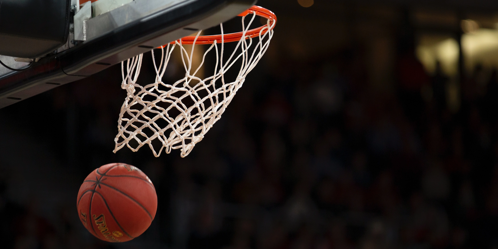
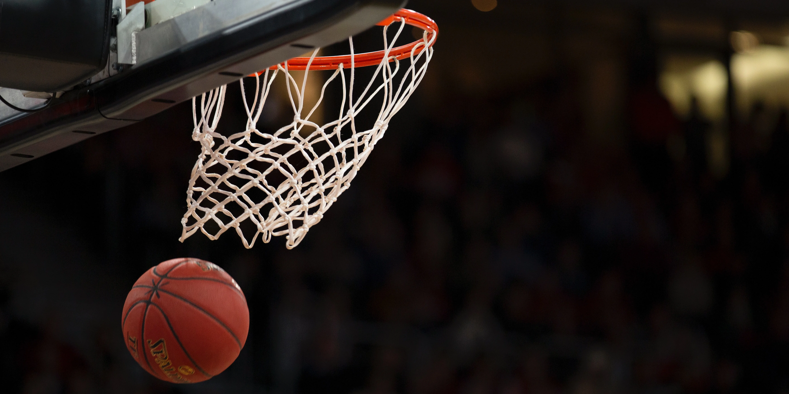

Some of my interests include basketball, going to the gym,
and learning the piano.
I have always enjoyed playing basketball. I like to
keep up with the nba and some college basketball, whenever
March Madness comes around.
I like to go to the gym at least 3 times a week. It is a habit
I picked up after high school as a result of playing sports.
I feel the gym is an important part of my life as it helps with my
physical health goals as well as my mental health.
A goal of mine has always been to learn to play the piano. I think
it is one of the most beautiful instruments to listen to, and learning
it would also help with learning some other instruments in the future.
Although I am not consistent with my learning right now, I hope in the
future to be able to master the piano.
 
